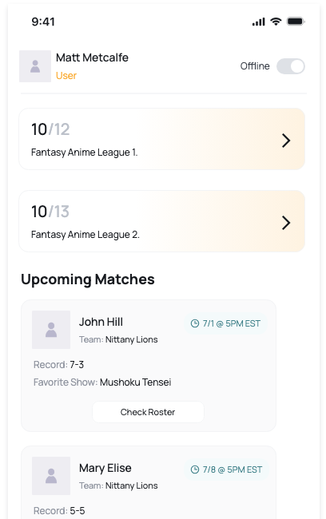
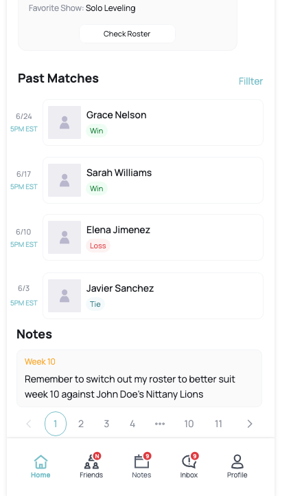

Development is still in the early stages. At v0.2, the focus is on core planning: draft systems, scoring ideas, and account structures. The next big milestone will be v1.0 (Lite Version), planned for January. This will include drafting, basic scoring, and messaging between friends.
By the end of 2026, the app should be feature-complete with stable servers, community features, and multiple play modes. Beyond that, expansions and event-based modes are possible — like themed leagues around popular shows or special challenges.
Think of this like a dev log for a video game. Each version will introduce new features and quality-of-life improvements. Here’s the rough roadmap:


Future app visuals will go here once the design is further along.